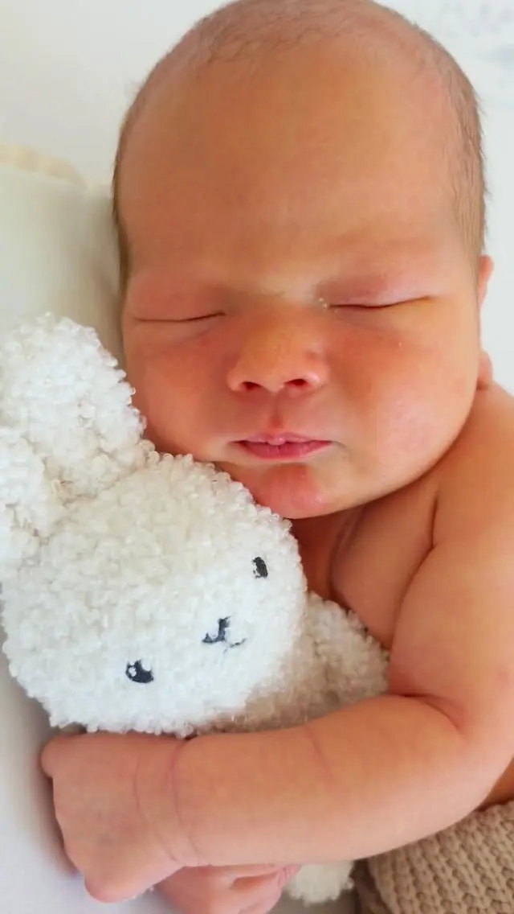
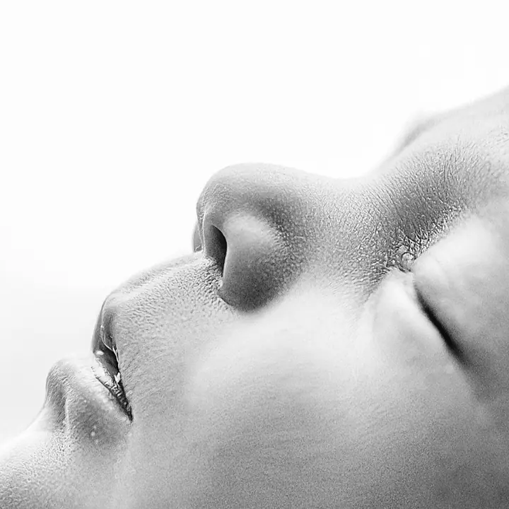
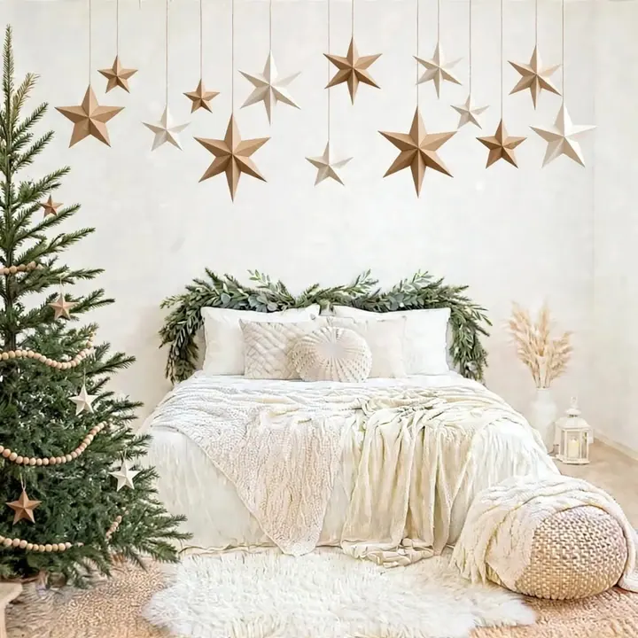

Novorozenecké focení u vás doma
Fotíme u vás doma, ideálně do 14 dnů věku miminka, kdy je hodně spavé. Veškeré vybavení vozím s sebou, včetně topení.

Jmenuji se Žaneta Bělínová a fotím hlavně novorozence, ale také budoucí maminky a celé rodiny v Olomouci a okolí. Na novorozenecké focení přijedu za vámi domů, kde se vy…
Rezervovat termínJsem novorozenecká a rodinná fotografka z Uničova. Žiju tu už několik let, ale moje cesta k fotografii začala na opačném konci republiky. Tam se narodily moje dvě děti a právě ony mě k focení přivedly.


Specializuji se na focení novorozenců v Olomouci a širokém okolí, a to přímo u vás doma. Z vlastní zkušenosti vím, že cestovat s novorozencem není vždy jednoduché, a pro maminku po císařském řezu to může být obzvlášť náročné. Proto vozím veškeré vybavení s sebou, včetně topení.
Mám ráda západy slunce, a tak těhotenské a rodinné focení plánuji venku na podvečer, kdy světlo krásně kouzlí. Ráda s vámi strávím chvíli, na kterou budete dlouho vzpomínat.
Co fotím
Fotíme u vás doma, ideálně do 14 dnů věku miminka, kdy je hodně spavé. Veškeré vybavení vozím s sebou, včetně topení.
Nejvhodnější je mezi 28. a 33. týdnem, venku v podvečer, kdy je nejhezčí světlo. Šaty na focení vám můžu zapůjčit.
Přirozené fotky venku pro všechny důležité milníky. Focení trvá 30 až 60 minut a v balíčku je 10 upravených fotografií.
Vánoční scéna v jemných přírodních tónech se světýlky, hvězdami a stromečky v Troubelicích. 30 minut focení a 3 upravené fotografie za 1 500 Kč.
Postup
Na novorozenecké focení se ozvěte ideálně 2 až 3 měsíce před porodem, ať vám můžu termín podržet.
Po porodu mi dejte vědět ideálně do druhého dne, abychom stihli focení do 14 dnů věku miminka.
Den předem vám zavolám a domluvíme styl a barvy. Focení probíhá dopoledne, trvá většinou 2 až 3 hodiny a řídí se potřebami miminka.
Do 14 pracovních dnů vám pošlu odkaz na galerii s náhledy, ze kterých si vyberete fotky k finální úpravě.
Otázky
Nemusíte. Stačí, aby bylo miminko spokojené, ideálně nakojené a unavené. Den předem vám ještě dám rady, jak ho připravit, aby vše klaplo.
Ne vždy se zadaří, a tak fotíme takzvané koukací fotky, které mám sama moc ráda. Některé pozice ale se vzhůru miminkem udělat nejdou, proto se ho snažíme uspat.
Mezi 28. a 33. týdnem těhotenství. Fotíme venku v podvečer, v létě počítejte klidně i s osmou hodinou. Oblečení volte jednoduché, v hnědých a béžových tónech a bez nápisů, nebo si půjčte moje šaty.
V každém balíčku je 10 upravených fotografií v elektronické podobě, každá další stojí 150 Kč. Platí se na místě, nejlépe QR platbou.